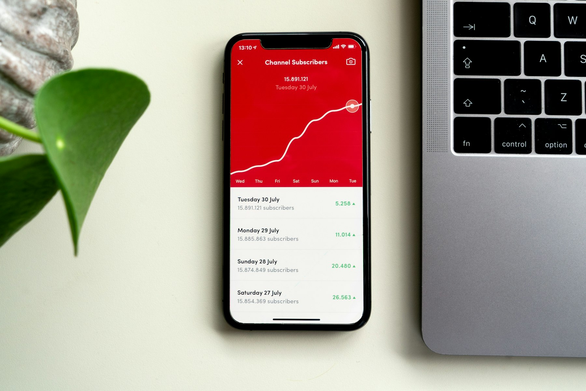

TL;DR
Freelancers need reliable invoicing tools for efficient payment management. When choosing one, consider factors like features, ease of use, and mobile access. Explore both free and paid options to find the best fit for your needs.
Why Invoicing Tools Matter for Freelancers
Invoicing tools play a crucial role in a freelancer's business. They help streamline billing processes, enhance professionalism, and manage finances effectively. Proper invoicing ensures you get paid on time, which is essential for any freelancer. By automating your invoicing, you can focus more on your projects rather than on billing issues. This not only improves cash flow but also saves significant time, enabling you to take on more clients and increase your earnings.
Factors to Consider When Choosing an Invoicing Tool
When selecting the right invoicing tool, there are several factors to consider. Ease of use should top the list; a complicated platform can waste valuable time. Look for features that suit your needs, such as customization options for invoices and automatic reminders for late payments. Also, consider integration capabilities with other tools you’re already using, like accounting software. Cost is another vital aspect; you'll want a tool that fits your budget while still offering essential features.
Best Free Invoicing Tools for Beginners
If you're just starting out, several free invoicing tools can provide great value. Platforms like Wave and Zoho Invoice offer ample features without any cost. These tools allow you to create professional invoices, track payments, and even send reminders to clients. Using free invoicing tools can help you manage your finances without the pressure of initial expenses. Just remember to check if they have limitations in terms of features or number of invoices you can send.
Top Paid Invoicing Solutions for Advanced Needs
For freelancers looking for advanced features, paid solutions like FreshBooks and QuickBooks are highly recommended. These platforms come with additional functionalities like project tracking, expense management, and tax calculations. With these tools, you can handle more complex invoicing needs and enjoy better customer support. They also allow you to create stunning invoice designs that reflect your brand, adding a touch of professionalism to your business.
Mobile Invoicing: Invoice on the Go
In today's fast-paced world, mobile invoicing tools have become essential for freelancers. Apps like Invoice2Go and Square Invoices allow you to create and send invoices directly from your smartphone. This means you can manage your billing even while on the move. Mobile invoicing not only saves time but also makes it easier to get paid promptly. You can send invoices immediately after completing a project, which reduces delays, ensuring a smoother cash flow.

Tracking Payments and Overdues
Keeping track of payments and overdue invoices is crucial for maintaining healthy finances. Many invoicing tools offer features that help you monitor which invoices have been paid and which are outstanding. You can set up automatic reminders for overdue invoices. Using these features helps ensure you get paid on time. Cultivating this habit will enable you to manage your income better, making it easier to plan for expenses and future projects.
Integrating Invoicing Tools with Accounting Software
To enhance your financial management, integrating your invoicing tool with accounting software like Xero or QuickBooks is advantageous. This allows for seamless data transfer, reduces the risk of human error, and saves time. Integration helps in syncing invoice information with your overall financial records. This means you spend less time on bookkeeping and more on what matters—your freelance work.
FAQ
What is the best free invoicing tool for freelancers?
Wave and Zoho Invoice are popular choices for freelancers looking for free invoicing solutions.
How can mobile invoicing help my business?
Mobile invoicing allows you to send invoices immediately after completing work, improving cash flow and saving time.
What features should I look for in an invoicing tool?
Look for ease of use, customization options, payment tracking, and integration with other software.
Are paid invoicing tools worth the investment?
Yes, paid tools often provide advanced features like project tracking and better customer support.
How do I track overdue invoices?
Many invoicing tools offer automatic reminders and payment tracking features to help you manage overdue invoices.
Photo credits
- Photo 1: Marta Filipczyk on Unsplash (https://unsplash.com/@martafilipczyk) (https://unsplash.com/photos/person-using-macbook-pro-on-bed-0JgvkiOpIYk)
- Photo 2: Content Pixie on Unsplash (https://unsplash.com/@contentpixie) (https://unsplash.com/photos/black-click-pen-on-white-printer-paper-ZOi1CrQDoH4)
- Photo 3: Kenny Eliason on Unsplash (https://unsplash.com/@heyquilia) (https://unsplash.com/photos/shallow-focus-photo-of-gray-laptop-computer-on-black-surface-bo8CqGmjjrI)
- Photo 4: Chris Yates on Unsplash (https://unsplash.com/@chrjy) (https://unsplash.com/photos/white-disc-on-laptop-computer-disc-player-iqELIpzpARI)
- Photo 5: Mika Baumeister on Unsplash (https://unsplash.com/@kommumikation) (https://unsplash.com/photos/person-holding-white-android-smartphone-Z-4MrsOMR2E)
- Photo 6: CardMapr.nl on Unsplash (https://unsplash.com/@cardmapr) (https://unsplash.com/photos/black-iphone-x-tvzykmBf3r0)
- Photo 7: Anoushka Puri on Unsplash (https://unsplash.com/@_purianoushka) (https://unsplash.com/photos/a-close-up-of-electronics-f1YfrZ1o2r8)